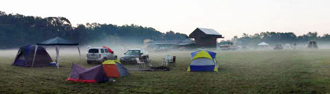
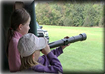
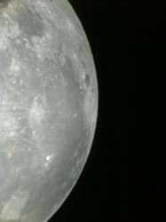

"It's Time for a Star Party"
What is Astroblast?
Beginning in June 1994, Astroblast became an annual event by the Oil Regional Astronomical Society (ORAS). Astroblast is a regional gathering of amateur astronomers and anyone interested in astronomy! Lectures, information, educational sessions and dark sky observing are all a part of our annual Star Party. Astroblast is open to registered participants only. Though if you missed our online registration period, on-site registration will be available during the event. Newcomers are encouraged to attend! One of the benefits of our observatory's remote location is the truly dark sky we get each night. As you may already know, we are located far from any city light plagued by light pollution.
What do you need to bring?
You will need to bring a tent or a camper with you, the food you will need for the time you are there, hiking equipment (optional), sunscreen, (many) blankets, and a flashlight. And of course yourself and all of your friends who are interested in Astronomy!
In addition, participants are invited to bring their own telescopes or binoculars.
Where to stay and where to eat:
Everybody needs a soft pillow, warm blanket (it gets cold during summer nights!) and a full tummy! We invite you to camp with us at the Observatory! There is a 15 acre field where most Astroblast participants set up their telescopes. This is camping: there will be NO water for drinking use (but it is available for cleaning purposes), there will also be no electricity available (aside from the Observatory, itself). There are showers available within 5 minute drive from the Observatory at the Two Mile Run Park Campgrounds. For the non-campers, another option is to stay in a cottage/house. Cottages are rented through the Two Mile Run Park Campground. The cottages are not located on the Observatory's property, but a few minutes away. If you would like to check out other accommodations and attractions, they are listed at the Oil Region Alliance website.
General rules of Astroblast:
- If you use a flashlight, please use a red lens or lamp, or tape several layers of red cellophane over the lens.
- Participant who drive: parking during dark hours will be located adjacent to the main entrance gate. Please park with headlights facing away from the observatory.
- There will be no vehicle entry or exit allowed from the camping area after dark.
- Park rules prohibit the consumption of alcoholic beverages on site.
- Please be courteous to other participants and don't touch anyone else's equipment without their permission.
These rules are to insure a dark atmosphere, a fun time, and the safety of all of our participants. Thank you!